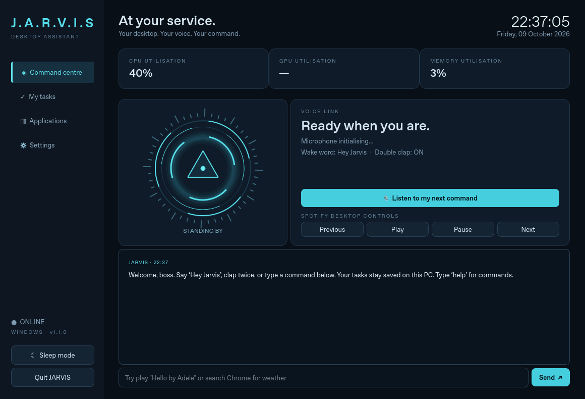

YOUR PERSONAL DESKTOP ASSISTANT
At your service.
Ready when you are.
Wake him with “Hey Jarvis” or two claps. Play a named Spotify song, dictate a Chrome search, launch apps, save tasks, and keep an eye on your PC.
Download JARVIS 1.1 for Windows ↓Portable ZIP · Includes its own Python runtime · First launch downloads the voice model.

Wake & talk
Offline voice recognition, double-clap activation, a natural British male voice, and sleep mode in the Windows tray.
Command your desktop
Say “play Hello by Adele” or “search Chrome for weather”. Launch registered apps, save tasks, and connect optional conversational AI.
See your system
Local time and date, CPU and memory usage, and GPU telemetry when supported by your driver.
Get started
- Download the ZIP above, then right-click it and select Extract All.
- Open the extracted folder and double-click JARVIS.exe.
- Let the voice model download and allow desktop microphone access in Windows settings.
- Run Create Desktop Shortcut.cmd to add JARVIS to your desktop.
- Open Spotify, sign in, and play one song. Try “Hey Jarvis, play Hello by Adele”. Configure voice and optional AI in JARVIS Settings.
Natural British speech needs internet and sends reply text to Microsoft. An offline Windows voice option is available. Open-ended conversation requires Ollama or your own API key. SpotX compatibility and hardware behavior need checking on your PC. The app supports its implemented commands; it cannot perform every possible PC action.
Read setup and troubleshooting instructions ↗